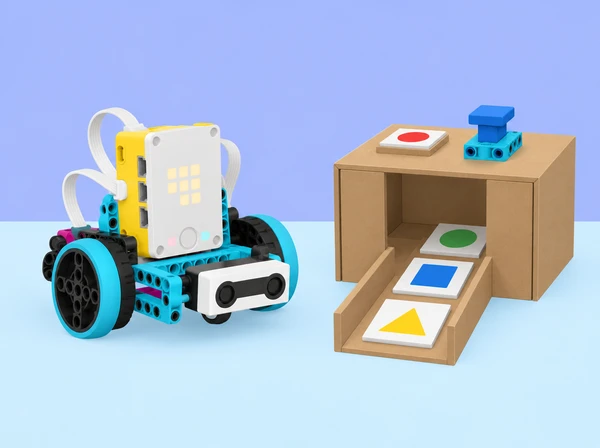

Una decisió, dues comprovacions
🏷️ Python: condicions i seguretat digital
🌱 Situació, repte i intenció
L’alumnat defineix quines condicions s’han de complir perquè aparega una resposta, construeix una maqueta sense cap pany funcional i programa una simulació en Python.
La situació adapta la unitat 8 Compound Conditionals and Logic Operators de LEGO Education Introduction to Python Programming · Course 2. Parteix d’una conversa segura sobre privacitat i controls digitals, practica condicions imbricades i operadors lògics amb taules de veritat, investiga una seqüència de dues comprovacions amb sensors i culmina en un joc cooperatiu de pistes dissenyat i provat per un altre equip. No és un sistema de seguretat ni valida contrasenyes reals; no es recopila ni es comparteix cap credencial personal.
🎯 Aprenentatges i vocabulari
- Representar una decisió com a condicions observables, resultats possibles i casos que han de continuar bloquejats.
- Escriure i explicar
if,elif,else, condicions imbricades i expressions booleanes en Python. - Combinar expressions amb
and,orinot; distingir “totes”, “almenys una” i “cap/aquesta no”. - Construir taules de veritat i taules de proves per cobrir cada combinació pertinent, incloses entrades absents o desconegudes.
- Separar comprovació digital, acció del mecanisme i senyal de feedback per a poder provar i revisar cada part.
- Descriure amb exemples com els controls físics i digitals poden protegir informació, i explicar què no garanteix una maqueta.
- Donar i incorporar feedback sense revelar dades reals, ni presentar el prototip com un dispositiu apte per a protegir béns o persones.
Booleà: valor de veritat True o False. Condició composta: expressió que combina condicions més simples. Imbricada: condició dins d’una altra branca.
codi_valid = (fitxa == "blava")
confirmacio = boto_premut
if codi_valid and confirmacio:
print("Mostra de prova autoritzada")
else:
print("Revisa les entrades")El fragment és Python general il·lustratiu; boto_premut i fitxa són valors de simulació. L’accés a ports i sensors SPIKE s’ha d’escriure segons la Knowledge Base de la versió de l’app instal·lada.
🧰 Materials i preparació
Un set SPIKE Prime per equip, hub carregat, dispositiu amb app SPIKE i Python disponibles, sensor de força i sensor de color, cables, peces Technic per a un indicador mòbil opcional, cartó reutilitzat per a una estació oberta de taula, fitxes grans amb símbols i colors, fulls per a taules de veritat, diari d’equip i temporitzador de classe. Tot el sistema és visible i accessible: no construïu panys, caixes tancades ni mecanismes que retinguen objectes.
També es pot fer tota la seqüència sense motor, només amb sensors, LEDs o simulació en paper.
Prepareu entrades fictícies i comprovables: tres fitxes de símbols geomètrics, un polsador/sensor de confirmació, un cas sense fitxa i un cas de valor desconegut. No useu contrasenyes reals, noms, inicials, dates de naixement ni codis d’accés del centre. Si voleu tractar bons hàbits de contrasenya, feu servir un exemple inventat en paper i parleu de llargària i unicitat sense demanar que ningú revele les seues. Comproveu els sensors, ports i forma d’aturar el programa amb l’app local;
les API i funcions canvien entre versions. No connecteu ni desconnecteu sensors amb l’execució activa.
Rols rotatius: qui escriu la condició; qui llig els casos de prova; qui cuida la maqueta i el hub; qui registra resultats. Abans de cada execució, tot l’equip prediu la branca que s’activarà. No hi ha cap moviment motoritzat obligatori.
📅 Seqüència didàctica
Protegim la informació sense compartir secrets (45 min)
Fase 1 · Activem i prediem
Conversa d’entrada (8 min): presenteu targetes amb situacions fictícies: un dispositiu demana un codi inventat; una persona comparteix la clau amb tota la classe; una pantalla mostra un nom; un usuari crea una clau llarga única. L’alumnat classifica què podria protegir la informació i què caldria esborrar o no compartir. No es demana que ensenyen cap codi real.
Fase 2 · Explorem i construïm
Descomposició (10 min): identifiqueu el problema del programa fictici: la resposta “correcte/incorrecte” no explica què passa si falta una dada o si la sessió acaba. Escriviu una especificació simple: una fitxa de prova concreta activa un missatge neutre; qualsevol altra entrada, inclòs cap valor, mostra “revisa la consigna”.
Fase 3 · Expliquem i registrem
Python en paper i editor (20 min): traceu if/elif/else amb tres valors simulats i representeu cada pas amb fletxes.
Fase 4 · Apliquem i millorem
En parelles, traduïu una regla a pseudocodi i a Python general sense guardar la dada introduïda en cap fitxer ni consola. Si useu editor real, tots els valors són de mostra.
Fase 5 · Comprovem i reflexionem
Una condició dins d’una altra, amb límits visibles (45 min)
Fase 1 · Activem i prediem
Fase 2 · Explorem i construïm
Fase 3 · Expliquem i registrem
Python (20 min): escriviu una condició imbricada amb valors introduïts manualment i marqueu amb claudàtors l’abast de cada bloc. Proveu les rutes: sessió inactiva; activa amb color A; activa amb color B; activa amb color no admés. Compareu-la amb una cadena de if/elif/else i discutiu quina forma fa més clara la regla en aquest cas.
Fase 4 · Apliquem i millorem
Prova física opcional (5 min): useu el sensor de color amb targetes grans; manteniu motor inactiu i compareu el valor llegit amb l’entrada esperada.
Fase 5 · Comprovem i reflexionem
AND, OR i NOT en una taula de veritat (45 min)
Fase 1 · Activem i prediem
Fase 2 · Explorem i construïm
Taula en equip (12 min): completeu les quatre combinacions de A/B i els resultats esperats per A and B i A or B; afegiu una columna per not A. Compareu entre equips i expliqueu qualsevol fila discrepant.
Fase 3 · Expliquem i registrem
Fase 4 · Apliquem i millorem
Useu and, or i not en regles amb propòsit distint; no els afegiu tots a una única expressió sense necessitat. Si connecteu sensor i botó, manteniu el motor desactivat.
Fase 5 · Comprovem i reflexionem
Minirepte (7 min): trobeu i corregiu una regla amb or on l’especificació demana and. Predigueu quin cas incorrecte passava abans de canviar-la i com la taula permet demostrar la correcció.
Dues comprovacions, una resposta prudent (45–90 min)
Fase 1 · Activem i prediem
Pregunta de disseny (10 min): com podem combinar una fitxa de color i la pressió d’un sensor de força per donar una resposta de prova? Definiu primer la regla en llenguatge natural, per exemple: l’assaig s’accepta si la fitxa és blava i el sensor es prem després que aparega la fitxa; si la fitxa no es reconeix, el sistema no interpreta el polsador com a acceptació.
Fase 2 · Explorem i construïm
Fase 3 · Expliquem i registrem
Fase 4 · Apliquem i millorem
Fase 5 · Comprovem i reflexionem
Reflexió: quina dada rep el programa? quina regla ha definit l’equip? quina afirmació no podem fer sobre la seguretat d’un objecte real?
Escape room de l’aula: obrir una ruta de pistes simulada (90 min)
Fase 1 · Activem i prediem
Encàrrec (10 min): cada equip crearà una estació de repte de taula amb dues comprovacions lògiques, un senyal clar i una via alternativa perquè el joc es puga completar sense sensor si cal. No es tanca ningú dins d’un espai ni es creen claus secretes. Les “pistes” són fitxes públiques i fictícies; el resultat activa una targeta de pròxima instrucció, no un pany.
l’equip n’escull una amb tres criteris: comprensible sense ajuda, comprovable amb quatre o més casos i resoluble amb els sensors presents. Escriviu instruccions curtes i la resposta correcta en un sobre docent separat.
Fase 2 · Explorem i construïm
Fase 3 · Expliquem i registrem
Fase 4 · Apliquem i millorem
Fase 5 · Comprovem i reflexionem
Feedback, revisió i límits del prototip (30–45 min)
Fase 1 · Activem i prediem
Visita de prova (10 min): una altra parella usa l’estació de pistes; l’equip autor observa sense donar indicacions i anota els punts on cal ajuda o la lògica produeix una eixida sorprenent. No s’enregistren veus, noms ni respostes personals.
Fase 2 · Explorem i construïm
Fase 3 · Expliquem i registrem
Fase 4 · Apliquem i millorem
Fase 5 · Comprovem i reflexionem
Autoavaluació (5–12 min): expliqueu la diferència entre la condició del programa i una garantia de ciberseguretat; identifiqueu una entrada que hauria de continuar sense resposta. Puntueu en privat treball col·laboratiu, documentació i gestió del temps, amb una acció de millora per al següent repte.
🧪 Evidències i avaluació
Recolliu la conversa inicial amb idees anònimes, diagrama de decisions, taules de veritat per and/or/not, pseudocodi, codi Python amb comentaris, configuració del sensor, matriu de proves esperades/no previstes, registre de falsos resultats o lectures inestables, instruccions de l’estació i una nota sobre privacitat i límits. El repte final es valora en quatre dimensions: raonament lògic (interpreta cada operador i explica la precedència/agrupació amb parèntesis si cal);
♿ Participació, accessibilitat i seguretat
Cap alumne revela contrasenyes, patrons de desbloqueig o comptes; tots els codis de la situació són públics i temporals. No useu dades identificables ni pantalles amb informació privada. Presenteu condicions amb text, símbols, gest i color alhora; oferiu versions de gran format, lectura assistida, paper i entrada manual. Les pistes no requereixen rapidesa física, audició, distinció de colors ni moviment per l’aula. L’estació és oberta, sense pany, atrapament o obstacle a les eixides;
cap prova bloqueja el pas ni exclou una persona d’una activitat. Els motors, si s’usen, mouen només una fletxa lleugera dins d’un recorregut curt i delimitat. Atureu-los abans de tocar la maqueta.
🔗 Referents i adaptació
Adapta les sis lliçons de la unitat 8 Compound Conditionals and Logic Operators del curs LEGO Education *Introduction to Python Programming · Course 2*: Password Protection, Make it Physically Safe, Make a Safer Safe, Security Operating with Logic, Escape Room i Ideas to Help with Escape Room. Manté l’exploració de protecció digital i física, condicions imbricades, operadors lògics, entrades de sensor en dos passos, restriccions de disseny, proves, col·laboració i retorn entre equips.
L’adaptació transforma la caixa forta i l’escapada en un joc de taula obert per a la biblioteca/aula, evita representar panys reals i substitueix qualsevol contrasenya per valors ficticis que no s’emmagatzemen. La guia marca lliçons de 45 minuts, dues de 45–90 minuts i el projecte Escape Room de 90 minuts; ací la durada flexible es dedica a construcció, combinacions de prova i revisió accessible.